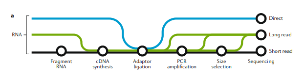
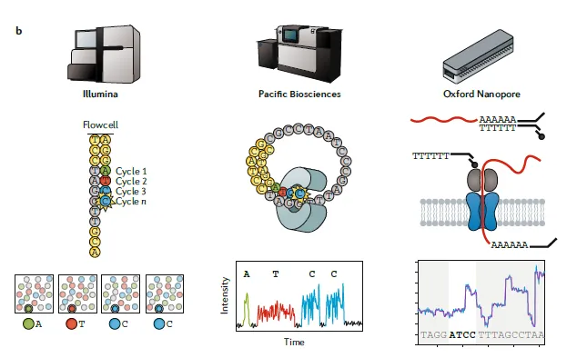
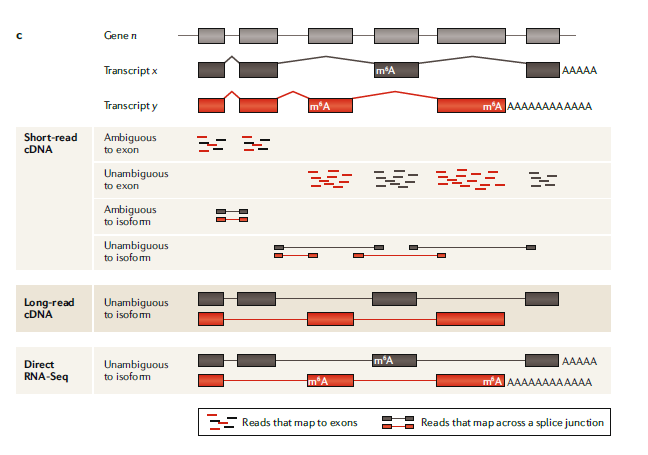
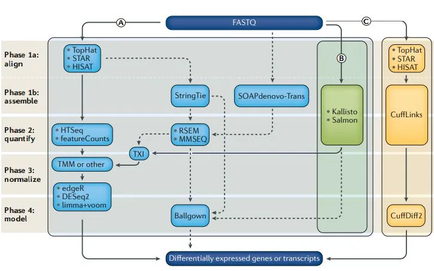
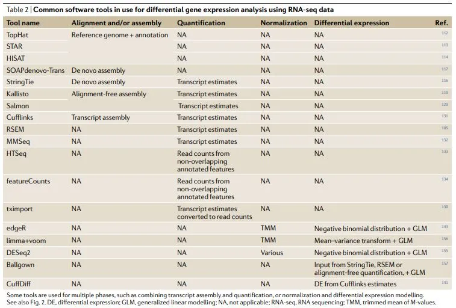
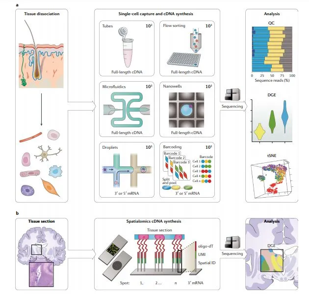
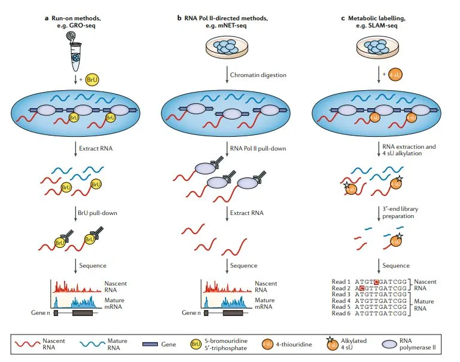
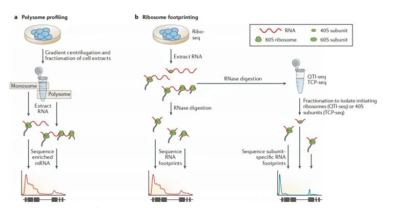
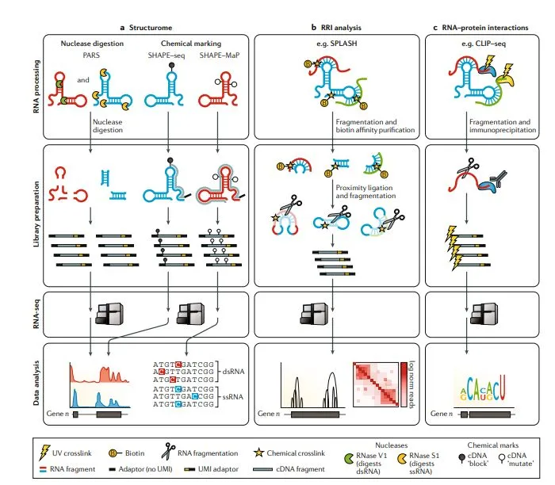

Nature重磅综述 |关于RNA-seq，你想知道的都在这
原文：https://mp.weixin.qq.com/s?__biz=MzAwMzIzOTk5OQ==&mid=2247495792&idx=1&sn=2d61e8e3a7f7bde78ecb8dbda5e62e4c&chksm=9b3c8920ac4b0036ab4c744b2c3a53ab1022a689ad9069838e42ddc87c502ccb6ceba35663a0#rd 合集：文献速递
编译 |生信宝典，May
校对 |生信宝典
生物信息学习的正确姿势
NGS系列文章包括NGS基础、高颜值在线绘图和分析、转录组分析 （Nature重磅综述|关于RNA-seq你想知道的全在这）、ChIP-seq分析 （ChIP-seq基本分析流程）、单细胞测序分析 (重磅综述：三万字长文读懂单细胞RNA测序分析的最佳实践教程)、DNA甲基化分析、重测序分析、GEO数据挖掘（典型医学设计实验GEO数据分析 (step-by-step)）、批次效应处理等内容。
摘要
RNA测序（RNA-seq）在过往十年里逐渐成为全转录组水平分析差异基因表达和研究mRNA差异剪接必不可少的工具。随着二代测序技术 (NGS)的发展，RNA-seq的应用也越来越广。现已经可以应用于很多RNA层面的研究，比如单细胞基因表达、RNA翻译（translatome）和RNA结构组（structurome结构组学）。新的有意思的应用，如空间转录组学（spatialomics）也在积极研究中。通过结合新兴的三代长读长long-read和direct RNA-seq技术，以及更好的计算分析工具，RNA-seq帮助大家对RNA生物学的理解会越来越全面：从转录本在何时何地转录 到RNA折叠 以及分子互作发挥功能 等。
前言
RNA测序（RNA-seq）自诞生起就应用于分子生物学，帮助理解各个层面的基因功能。现在的RNA-seq更常用于分析差异基因（DGE, differential gene expression），而从得到差异基因表达矩阵，该标准工作流程的基本分析步骤一直是没有太大变化：
-
始于湿实验，提取RNA，富集mRNA或消除rRNA，合成cDNA和构建测序文库。
-
然后在高通量平台（通常是
Illumina）上进行测序，每个样本测序reads深度为10-30 Million reads。 -
最后一步是计算：比对/拼装测序reads到转录本，计数与转录本比对上的reads数定量，样本间过滤和标准化，样本组间基因/转录本统计差异分析。
早期的RNA-seq实验从细胞群（如来源于某个组织或器官的细胞）中得到DGE数据，并可以应用于很多物种，如玉米(Zea mays)，拟南芥(Arabiodopsis thaliana)，酿酒酵母(Saccharomyces cerevisae)，鼠(Mus musculus)和人(Homo sapiens)。虽然RNA-seq这个词通常包含很多不同的RNA相关的方法或生物应用，但DGE分析始终是它的主要应用（表1），并且是DGE研究的常规工具。
RNA-seq的广泛应用促进了对许多生物层面的理解，如揭示了mRNA剪接的复杂性、非编码RNA和增强子RNA调控基因表达的机制。RNA-seq的发展和进步一直离不开技术发展的支持（湿实验方面和计算分析方面），且与先前的基于基因芯片 的技术比起来，获得的信息更多、偏好性更小。到目前为止，已从标准的RNA-seq流程中衍生出多达100种不同的应用。大部分应用都是基于Illumina short-read测序，但最近基于long-read RNA-seq和direct RNA sequencing (dRNA-seq)的方法可以帮助解决Illumina short-read技术处理不了的问题。
本文中，我们先熟悉'baseline'流程，用short-read RNA-seq技术分析DGE。先描述短读长测序的文库构建过程、实验设计注意事项和计算分析流程，探究其应用如此广泛的原因。然后描述单细胞转录组和空间转录组的发展和应用。我们会举例说明RNA-seq在RNA生物学关键研究中的应用，包括转录和翻译的动力学分析，RNA结构，RNA-RNA和RNA-蛋白质间相互作用等。最后我们小小地展望一下RNA-seq的未来，如单细胞和空间转录组是否也会是以后的常规分析，在什么情况下long reads会替代short reads RNA-seq。不过篇幅有限，本文对RNA-seq分析还是有照顾不到的地方，比如典型的有非编码转录组，原核转录组和表观转录组。
图一：short-read,long-read和direct RNA-seq技术和工作流程

**图一：**A
3种RNA测序方式的建库方法概览：short-read测序（黑色），long-read cDNA测序（绿色）和long-read direct RNA-seq（蓝色）。根据不同的应用目的，文库构建的复杂性和偏好性不同。short-read和long-read cDNA的建库方案在很多步骤是一样的，比如在所有建库方案中接头连接是共有的。三种方法都会受到样本质量和文库构建上下游的计算问题影响。

**图一：**B
三种主要测序技术的比较。
Illumina workflow（左）：
建库之后，单独的cDNA分子在流动槽中构建测序簇，使用3’阻断的荧光标记的核苷酸进行边合成边测序。在每一轮测序中，高速摄像机拍照捕获当前激发的荧光，来判断当前是哪个核苷酸合成进来，测序长度在50-500 bp。
The Pacific Biosciences workflow（中）：
建库之后，每个分子与固定在纳米孔底部的聚合酶结合。然后是边合成边测序，测序长度可以高达50 kb。
The Oxford Nanopore workflow（右）：
建库后，将单个分子加载到流动槽中，在接头连接过程中加上的分子马达会与生物纳米孔结合。马达蛋白控制RNA链穿过生物纳米孔，引起电流变化，从而推测出经过的碱基序列，生成的测序reads大小为1-10 kb。

**图一：**C
short-read,long-read和direct RNA-seq分析：
人体中，超过90%的基因（gene n）会发生可变剪接，并生成至少两种不同的表达形式（转录本x,y）。相比于long-read测序可以直接测到每一种不同的转录本，从而获得更全面的信息，short-read的测序在检测转录本上受限于短reads比对的模糊性。在short-read cDNA测序中，有很多reads比对回两个不同转录本共享的外显子上导致无法确定其真实来源。跨越2个或多个外显子的Junction reads可以改善转录异构体的分析，但当两种转录异构体共享剪接断点时就无能为力了。这些问题都增加了分析和解读结果的复杂度。long-read cDNA方法能直接检测全长转录异构体,从而移除或大幅减少检测偏好，提高差异表达转录本分析的准确率。
而以上这些方法都依赖于cDNA转换，这一过程抹去了有关RNA碱基修饰的信息，而且也只能粗略估计多聚腺苷酸（poly（A））尾巴的长度，而direct RNA-seq可以直接分析全长转录本异构体、度量碱基修饰（比如N6-甲基腺苷（M6A））和检测poly（A）尾巴长度。
RNA-seq技术的进步
在NCBIShort Read Archive (SRA)数据共享平台中多于95%的数据来自于Illumina short-read测序技术（表2）。目前几乎所有已发布的mRNA-seq数据都是short-read测序所得，所以我们认为这是RNA-seq技术的常规操作，接下来讨论它的主要流程和限制 。不过在转录异构体检测的研究（图一；表1）方面，不断进步的long-read cDNA测序和dRNA-seq技术将向short-read测序技术的主导地位发起挑战。
| 测序技术 | 平台 | 优势 | 劣势 | 重要应用 |
|---|---|---|---|---|
| short-read cDNA | llumina, Ion Torrent | ①高通量，每次运行产生的reads数是long-read平台的100-1000倍之多；②测序偏好和错误模式研究透彻（同聚物homopolymers对于Ion Torrent来说仍然是个问题）；③可使用的方法和计算流程很多；④可用于降解了的RNA的分析 |
样品制备过程如反转录，PCR和片段选择都会引入偏好性；转录异构体的检测和定量受限；新转录本的鉴定基于转录本拼装步骤 | 几乎所有的RNA-seq应用都是基于short-read cDNA测序：DGE (differential gene expression), WTA (whole- transcriptome analysis),小RNA，单细胞，空间转录组，新生转录本，翻译组，RNA结构组和RNA-蛋白质相互作用分析等等。 |
| long-read cDNA | PacBio, ONT | ①1–50kb的长reads可以检测很多全长转录本 ②用于de novo转录组分析的计算方法简化很多 | ①低-中通量，每个run获得0.5 M-10 Million reads②样品制备过程如反转录，PCR和片段选择(部分方法需要)都会引入偏好性③不太适合降解了的RNA |
尤其适用于转录异构体的发现，无参转录组的de novo分析，融合转录本的发现，HL A (human leukocyte antigen)和MHC (major histocompatibility complex)等复杂转录本分析 |
| Long-read RNA | ONT | ①1–50kb的长reads可以检测很多全长转录本②用于de novo转录组分析的计算方法简化很多 ③样品制备不需要反转录或PCR，降低了偏好性 ④可以检测RNA碱基修饰 ⑤单分子测序直接估计poly(A)全长 | ①通量低，每个run仅生产0.5 M-1 Million reads②样品准备和测序过程偏好性不明确③不太适合降解了的RNA |
①尤其适用于转录异构体的发现，无参转录组的de novo分析，融合转录本的发现，MHC和HLA等复杂转录本分析 ②适用于检测核糖核酸修饰 |
表1
short-read cDNA测序用于差异基因分析
short-read测序 是检测和定量转录组范围基因表达的最常见方式，部分原因是因为它比表达芯片更便宜、更易于应用，但更主要的是它可以获得全转录组水平高质量的表达数据。采用Illumina的short-read测序做DGE分析的核心步骤包括RNA提取，cDNA合成，接头连接，PCR扩增，测序和数据分析（图一）。由于mRNA片段化和基于beads的文库纯化过程中偏好150-200 bp的片段，导致这个方案最后获得的cDNA片段都在200 bp 以下。每个样本平均测20-30 million reads，对每个基因或转录本进行定量，再统计分析差异基因（参考RNA-seq数据分析部分）。short-read RNA-seq结果很稳定，对RNA-seq的short-read测序技术多次测试比较发现，其平台内和平台间的相关性都很好。然而在样本准备和计算分析阶段有一些步骤也会引入偏好性。这些限制会影响特定生物问题的解释，比如正确地识别和定量一个基因的多个转录异构体。这一局限与研究特别长或特别多变的转录异构体尤其相关。如人的转录组中，50%的转录本长度大于2500 bp，转录本长度范围在186 bp到109 kb。尽管short-read RNA-seq 可以对更长的转录本进行细致的分析，但相应的方法很难高通量化用于全转录组范围的分析。其它的偏好性和限制可能来自于RNA-seq数据分析的计算方法，比如怎么处理在基因组上有多个匹配位置的序列。一个新的称为合成长读长测序 (synthetic long reads)可以进行全长mRNA测序和解决一部分存在的问题。在short-read RNA-seq建库前利用**唯一分子标识符（UMI）**标记cDNA分子，从而解决短读长问题做到测序全长mRNA。基于这个技术可以对长达4 kb的转录本异构体进行鉴定和定量。从根本上解决short-cDNA测序固有限制的最有效的方法还是long-read cDNA测序和dRNA-seq方法。
long-read cDNA 测序
尽管Illumina是目前主流的RNA-seq平台，但Pacific Biosciences（PacBio）和Oxford Nanopore（ONT）能在完整的RNA分子反转录为cDNA后进行单分子长读长测序。因为消除了short RNA-seq reads需要的组装步骤，可以解决short reads测序相关的一些问题。例如：序列比对的模糊性降低，可以鉴定更长的转录本，这些有助于更好地检测转录异构体的多样性。同时还可以降低许多short-read RNA-seq计算工具引入的剪接位点检测的高假阳性率。
基于PacBio技术的Iso-Seq 能够检测长达15 kb的全长转录本cDNA reads，这有助于发现大量先前未注释的转录本，并通过全长测序确认了早期基于跨物种同源序列的基因预测结果。在标准的Iso-Seq实验流程中，模板置换逆转录酶可以将高质量RNA转化为用来测序的全长cDNA。然后将得到的cDNA进行PCR扩增，并构建PacBio单分子实时（single-molecule, real-time，SMRT）文库。因为短转录本可以很快地扩散到测序芯片的活性表面造成一定的测序偏好，建议选择1至4 kb长度的转录本一起测序，以保证这一长度范围的长短转录本有同等几率进行测序。同时PacBio测序对模板量需求很大，要求进行大体积PCR，需要优化反应体系降低过扩增的影响。PCR末端修复和PacBio SMRT 接头连接后，就可以进行long-read测序了;通过调整测序芯片的上样条件可以进一步控制测序片段的大小选择偏好。
ONT cDNA测序 也可以测序全长转录本，而且适用于单细胞测序。同样使用模板置换逆转录来制备全长cDNA，在加接头制备测序文库之前，可以自己决定是否进行PCR扩增。Direct cDNA测序 可消除PCR偏差，获得的测序结果质量更高 ；PCR扩增的cDNA文库的测序产出（测序获得的reads数）更高，适用于样本中RNA含量较少的情况。而目前还未在ONT cDNA测序中发现PacBio测序存在的转录本长短选择偏好。
这些long-read cDNA方法都受模板置换逆转录酶限制。这个酶可以把全长和截断的RNA都转换成cDNA。反转录酶只将5’-capped mRNA转换成cDNA，这样就降低了由于RNA降解、RNA断裂导致的转录本截断生成的cDNA和不完整的cDNA合成，从而提高数据质量。但是这些逆转录酶对ONT平台的测序reads读长有反作用 。
Long-read direct RNA 测序
正如上面所讨论的，long-read和baseline short-read 平台一样，都需要在测序之前将mRNA转化成cDNA。近期Oxford Nanopore展示他们的纳米孔测序技术能直接测序RNA，也就是说，建库过程中没有修复、cDNA合成、PCR扩增这些过程，移除了这些操作过程的偏好并且保留了RNA上的表观修饰信息，这一技术也称为dRNA-seq 。直接从RNA建库需要两步接头连接。首先，带有oligo(dT)悬臂的duplex adaptor与mRNA的PolyA尾巴退火连接。后续是一个可选的逆转录操作，用于提高测序通量（一般推荐做）。第二个连接操作就是添加连有分子马达的测序接头用于后续测序。随后文库加载入MinION，启动3ʹpoly(A)尾巴向5ʹcap端的RNA测序。早期研究表明，dRNA-seq的测序长度在1000 bp左右，最大测序长度超过10 kb。与短读长测序相比，长读长测序可以改善转录异构体的检测，估计PolyA尾巴的长度进行选择性多腺苷酸化分析。Nanopolish-polya工具可以分析纳米孔测序得到的数据，计算基因间或转录本间的poly(A)尾的长度。结果表明内含子保留的转录本相比于完全剪切的转录本具有稍长的PolyA尾巴。虽然dRNA-seq还处于起步阶段，但是其能直接检测RNA碱基修饰的潜力有望在表观转录组领域促进更新的发现。
长读长测序与短读长测序技术的比较
虽然长读长测序技术在转录本分析方面比短读长测序技术有一些明显的优势，但是也存在一些局限。跟成熟的短读长技术平台相比，长读长测序技术的测序通量低很多，错误率更高。而长读长测序技术的主要优势即能测序更多的独立转录本全长，依赖于高质量的RNA文库。这些局限会影响那些特别依赖长读长测序实验的灵敏性和特异性。
当前长读长测序方法的主要局限就是其通量低。在Illumina平台上，一个RUN可以生成10^9-10^10条reads，而PacBio和ONT平台上，一个RNA-seq RUN只能产生10^6-10^7 reads。这种低通量限制了应用长读长测序的项目的大小（实验样本的数目），并降低了差异基因表达检测的灵敏性。当然也不是所有的应用都需要很高的测序深度。比如如果研究者关注的是转录异构体的发现和鉴定，测序长度比测序深度更重要。测序1百万个PacBio环形一致性序列 (circular consensus-sequencing, CCS) 可以保证长度大于1 kb的高表达基因测通，ONT测序技术也是如此。因此，测序深度主要影响低中表达的基因。低通量的局限性在研究功能基因组进行大规模差异基因分析时会更明显。为了获得足够的以保证转录组表达变化检测的准确性，需要对多个样品组的多个生物学重复同时进行测序分析。在这些应用上，长读长技术不太可能取代短读长技术，除非它们的通量能提高2个数量级。随着全长RNA-seq reads数目增加，转录本检测的灵敏度将会达到Illumina平台的水平，但有着更高的特异性。通过将Illumina 的短读长RNA-Seq与PacBio的长读长Iso-Seq结合 (并且可能还与ONT方法结合)，在保留转录本定量质量的基础上，可以增加RefSeq注释的全长转录异构体检测的数量、灵敏性和特异性。尽管当前长读长RNA-seq方法实验成本更高，但它们可以检测短读长方法所遗漏的转录异构体，尤其是那些难以测序但与临床相关的区域，例如高度多态的人类主要组织相容性复合体MHC或雄激素受体。
长读长测序平台的第二个主要限制是其高错误率，比成熟的Illumina测序仪要高出一到两个数量级 。长读长测序平台上生成的数据还包含更多的插入-缺失错误。如果是做突变位点检测这些错误率/错误形式会影响很大，但是对转录组分析影响并不是太大，只要能区分转录本和转录异构体即可。如果是应用于对错误率敏感的项目，也有一些办法进行补救。PacBio SMRT 测序平台出现的典型测序错误是随机错误，可以通过增加测序深度来进行CCS序列矫正解决。在测序过程中，cDNA的长度是人为选择控制的，连接接头后形成环形模板，每个分子可以被测序多次，从而产生长度范围是10-60 kb的连续长序列，里面包含了原始cDNA的多份拷贝。这些长序列经过计算拆分成为单个cDNA子读长 (subreads)，并比对在一起互相校正获得一致性序列。插入的cDNA分子测序到的次数越多，校正后错误率越低；研究表明CCS可以将错误率降低到与短读长相当甚至更低的水平。但是，把平台的测序能力用于读取相同的分子更加加剧了其测序通量低的问题，更少的独立转录本会被测到。
长读长RNA-seq方法的敏感性还受到其他几个因素的影响。首先 ，用于建库的RNA分子需要是全长转录本，但由于RNA提取、分离过程中会导致RNA断裂或实验过程中RNA降解，使得理想状态并非总能实现。这种情况在短读长RNA-seq中也会导致可控的3ʹ端偏好，但对定位于应用长读长的RNA-seq分析全长转录组的研究者来说，即使是低水平的RNA降解，效果也会受限。因此，相关研究者需要在RNA提取后进行严格质控。其次 ，中位读长长度也会受到文库制备中的技术问题与技术偏好的限制，例如cDNA合成过程中的截断或降解的mRNA反转录成的降解cDNA。最近研发的高效逆转录酶具有更好的链特异性和更均一的3’-5’转录本覆盖，可能会改善这一过程。虽然还没有广泛使用，但是这些高效逆转录酶也提高了对结构稳定的RNAs(如tRNAs)的覆盖检测，这是其它在基于oligo-dT和全转录组分析 (WTA) 的方法中使用的逆转录酶很难达到的效果。第三 ，长读长测序平台固有的偏好（如长插入文库在测序芯片上的更不容易进行测序）会降低更长转录本的覆盖率。
长读长测序 (不管是基于cDNA还是RNA) 因为读长长，解决了短读长测序方法用于转录异构体分析的短板。长读长方法可以获得从Poly(A)尾巴到5ʹ帽子的全长转录本读长。因此，这些方法对转录本和转录异构体的分析不再依赖于短序列重构转录本或推测转录本的存在；而是每个测序到的reads都代表它所来源的RNA分子。基于全长cDNA测序或dRNA-seq的差异基因分析依赖于PacBio和ONT技术的通量提高。长读长RNA-seq与深度短读长RNA-seq技术结合的思路 正在迅速被研究者用于更全面的分析，这非常类似于基因组组装所采取的混合组装方式。随着研究的深入，长读长和dRNA-seq方法将会揭示：即便在研究的很透彻的物种中，已经鉴定出的基因和转录本可能也只是冰山一角。随着方法的成熟和测序通量的增加，基于长读长的差异转录本分析将会成为常规研究。基于组装的长读长RNA-seq (synthetic long-read RNA-seq)或其它技术的发展对这个领域的影响还有待观察。从目前来看，Illumina短读长RNA-seq依然占据了该领域的主导地位。后面我们只会集中讨论短读长测序。
改良RNA-seq建库方法
RNA-seq方法源于早期的表达序列标签 (expressed-sequence tag)和表达芯片技术，最初用于分析多聚腺苷酸化的转录本。但是，二代测序的应用发现了这些方法的局限性，虽然在表达芯片中并不明显。因此，在RNA-seq技术首次发表后不久，许多文库制备方法的改进相继推出。例如，片段化RNA而非cDNA可以降低3'/5'偏好，链特异性文库制备方法能够更好的区分正链和负链转录的基因，这些改进都能获得更准确的转录本丰度估计。片段化RNA和构建链特异性文库很快成了大部分RNA-seq文库制备试剂盒的标配。这里我们简要描述了RNA-seq方法的其它改进，以便研究者可以根据特定的生物学问题或样本自身特征进行选择。这些改进包括不基于oligo-dT的RNA富集方法 ，特异性富集3ʹ或5ʹ末端转录本的方法 ，使用UMIs区分PCR duplicates的方法 ，以及针对降解的RNA构建文库的方法 。这些方法的组合（也包括dRNA-seq和后面提到的分析其它状态的RNA的方法）允许研究者揭示由可变poly(A) (alternative poly(A), APA)，或选择性启动子 (alternative promoter)和可变剪接 (alternative splicing)导致的转录组的复杂性。
Poly(A)富集的替代方法
大多数发表的RNA-seq数据都是基于oligo-dT方法富集包含poly(A)尾巴的转录本，定位于分析转录组上的蛋白质编码区 （ 生信宝典注 ： 部分lncRNA也有 poly(A)尾巴 ）。但是这种方法除了会导致3ʹ端偏好外，很多不含Poly-A尾巴的非编码RNA，例如miRNA和增强子RNA不会被测到。完全不进行选择而使用全部提取的RNA也不合适，因为这会导致高达95%的测序数据来源于rRNA。因此，研究者选择将oligo-dT富集用于mRNA-seq，移除rRNA进行全转录组测序（WTA）。短链非编码RNAs（如miRNA）既无法用oligo-dT方法富集，WTA测序中也很难覆盖，因此对其研究需要特定的分离建库方法，一般是切胶或磁珠分选后直接连接接头 (sequential RNA ligation，通常构建出来都是链特异性文库) （ 生信宝典注： 这一点尤其要注意 ）。
WTA生成的RNA-seq数据包含编码和一些非编码RNA。WTA方法也适用于Poly-A尾巴与转录本其它部分分开了的降解了的样品。移除rRNA有两种方法，一种 是将rRNAs从总RNA中分离出来（所谓的pull-out法），另一种 是使用RNAse H酶降解rRNA。这两种方法都需要使用序列特异性和物种特异性的、能与细胞质rRNA (5S rRNA，5.8S rRNA，18S rRNA和28S rRNA)和线粒体rRNA (12S rRNA和16S rRNA)互补的寡核苷酸探针。为了简化人类、大鼠、小鼠或细菌 (16S和23S rRNA)样本的处理，上述探针混合后再加入提取的总RNA中，与其中的rRNA杂交以便下一步的清除。其它高丰度的转录本，例如珠蛋白RNA (globin)或线粒体RNA也可以按照类似的方法去除。Pull-out方法 中探针是带有生物素的，然后使用链霉素包裹的磁珠从总RNA溶液中除去探针-rRNA复合物，剩余的RNA用于建库测序，试剂盒 有Ribo-Zero (Illumina，USA) （ 生信宝典注： 还是Illumina取名字霸气 ）和RiboMinus (Thermo Fisher，USA)。RNAse H方法使用RNAse H （NEBNext RNA depletion(NEB，USA)）和RiboErase (Kapa Biossystems，USA)降解oligo-DNA:RNA复合物。最近的比较表明，在RNA质量高的前提下，这两种方法都可以将产出数据中rRNA的比例降低至20% 以下。但是，研究还表示RNase H方法比pull-out法的稳定性要好。另外对应用不同试剂盒获得的数据进行差异基因分析时要注意转录本长度的偏好性的影响。作者还描述了另外一种类似于RNase H的方法，效果也不错但之前没有报道过。ZapR方法 是Takara Bio的专利技术，它使用一种酶来降解RNA-seq文库中的rRNA片段。相比于oligo-dT RNA测序方法，rRNA移除建库方法的一个局限是需要更高的测序深度，主要是因为文库中还有一定的rRNA留存。
Oligo-dT和rRNA移除法都可以用于后续实验的DGE分析，研究者们通常会延续实验室一直使用的方法或最容易使用的方法。然而，对于这些方法的选择需要根据情况做一些考量，尤其是那些易降解的样本，如果采用WTA方法会检测到更多的转录本，但是其实验成本也高于oligo-dT方法。
富集RNA 3ʹ端用于Tag RNA-seq以及可变多聚腺苷酸分析 (Enriching RNA 3ʹends for Tag RNA- seq and alternative polyadenylation analysis)
标准的短读长Illumina方法应用于高质量差异基因分析时需要对每个样本测序1000万到3000万条（10M到30M条）reads。如果研究者只关注基因水平的表达，并且样本数目比较多和生物重复比较多时，或者实验样品材料受限时，建议采用3ʹtag计数。由于测序集中在转录本的3ʹ末端，需要的测序深度会降低，就可以降低成本或同时测序更多样本。富集3ʹ末端也可以用于检测由于mRNA前体上发生的选择性多聚腺苷酸化导致的单个转录本的poly(A)位点的变化 。
3ʹ mRNA-seq方法 中每个转录本获得一条测序片段 (tag read)，通常是对其3’末端的测序。tag read的数目理论上与转录本的丰度是成正比的。标签测序法 (tag-sequencing protocols)，例如QuantSeq (Lexogen, Austria)通常比标准RNA-seq实验流程更为简单。标签测序法采用随机引物或带有oligo-dT的引物进行PCR扩增分选出转录本的3’末端的同时加上接头序列，优化掉了poly(A)富集、rRNA移除和接头连接等步骤。这一方法可以在更低的测序深度条件下达到与标准RNA-seq相当的敏感性，因此可以混合更多样本同时测序。因为不需要考虑外显子连接检测 (exon junction)和基因长度归一化，这一方法的数据分析也简化了（ 生信宝典注： 其实也是需要考虑的，转录本末端或UTR区也会存在剪接，具体取决于测序读长和特定基因的结构。 不过如果使用STAR/BWA等有soft-clip机制的比对工具也可以不考虑。 ）。但是，3ʹ mRNA-seq方法可能会受到转录本序列相似区域 (homopolymeric region) 导致的引物结合错误进而导致扩增出错误的片段的影响；也只能进行非常有限的转录异构体分析，这会抵消这一方法因为测序深度需求低带来的高性价比，尤其是对于那些仅够一次使用的样本。
mRNAs的选择性多腺苷酸化（APA）会产生3ʹ UTR长度不等的转录异构体。对于一个特定的基因来说，这不只是多转录出几个异构体，而是3ʹUTR中存在的顺式调控元件会影响转录本自身的调控。能够研究APA的方法可以让研究者们对miRNA的调控、mRNA的稳定性和定位、以及mRNA的翻译有更多理解。APA法要求是富集转录本的3ʹ末端，从而提升检测信号和灵敏度，而前面提到的3ʹ mRNA-seq标签测序法 则正合适。其它方法如多聚腺苷酸位点测序 (polyadenylation site sequencing, PAS-seq)法 ，首先将mRNA打断为150 bp左右的片段，然后使用带有oligo-dT的引物进行模板置换生成cDNA用于后续测序，其中的80%的测序序列来源于3ʹUTR。TAIL-seq 则避免使用oligo-dT，RNA打断前，先移除rRNA，然后在转录本poly(A)尾巴连接3ʹ接头。片段化后，再加上5ʹ接头就完成了文库制备。在RNA-蛋白互作分析方法 如交联免疫沉淀 (cross-linking immunoprecipitation, CLIP)测序和dRNA-seq中也能评估APA。
富集RNA 5ʹ末端用于转录起始位点鉴定 (Enriching RNA 5ʹends for transcription start- site mapping)
富集5ʹ端RNA (7-methylguanosine 5ʹ-capped RNA)的测序的方法常用来鉴定启动子和转录起始位点(TSSs)，可以做为DGE分析的补充。有多种方法都可以实现这个操作，但很少作为常规使用。在CAGE (cap analysis of gene expression) 和RAMPAGE (RNA annotation and mapping of promoters for analysis of gene expression)方法 中，使用随机引物完成cDNA第一条链合成后，mRNA 5ʹ帽子结构上用生物素标记，然后使用链霉亲和素富集5’ cDNA。CAGE使用II型限制性内切酶切割5ʹ端接头下游21-27 bp位置生成短cDNA序列。而RAMPAGE则使用模板置换 (template switching)来生成稍微长一些的cDNA，进行富集测序。单细胞标签逆转录测序技术 (single-cell-tagged reverse transcription sequencing, STRT-seq) 能够在单细胞水平上鉴定TSS位点。这一方法使用生物素标记的模板置换寡核苷酸来合成cDNA，磁珠捕获并在5’端片段化然后测序。CAGE应用到的5ʹ末端标记技术是由日本理化所 (Riken)开发用于在早期功能基因研究中最大化获得全长cDNA的方法。日本理化所领导的小鼠功能注释 (FANTOM, Functional Annotation of the Mouse)项目中使用CAGE技术鉴定了1300多个人类和小鼠原代细胞、组织和细胞系的TSSs (转录起始位点)，这充分显示了CAGE的强大。在最近的一个方法比较研究中，CAGE也表现最佳。但是作者同时也说到，仅使用5ʹ末端捕获测序鉴定出的TSS位点假阳性比较多，建议结合其他独立的方法进一步验证，如DNase I测序或H3K4me3染色质免疫共沉淀测序 (ChIP-seq)。
使用唯一分子标识符来检测PCR重复
RNA-seq数据通常有较高的重复率 (duplication rates)，即许多测序序列会比对到转录组的相同位置。在全基因组测序中，比对到同一位置的序列被认为是PCR扩增引入的技术噪音，通常只保留1条用于后续分析；而在RNA-seq中，这些重复的序列则因为可能是真实的生物信号而被保留。高表达的转录本在样本中可能有数百万份RNA拷贝，当做为cDNA测序时，产生相同的片段也是合理的。因此，在比对 (alignment)过程中，不建议计算去除比对到同一位置的序列，因为它们代表了真正的生物信号。尤其是在使用单端测序 (single-end sequencing)时更是如此，因为一对片段只要一端序列相同就会被认为是一个重复 (duplicate)；而双端测序 (paired-end sequencing)中，片段化的两端必须发生在同样位置才会导致duplicate，而这个的发生概率比较低。但是，在制备cDNA文库时，由于PCR的偏好性，还是会引入duplication reads；很难去评估PCR引入的重复reads和生物重复reads的比例并把其作为一个质控因素校正RNA-seq实验的结果。
UMIs被认为是一个处理扩增偏好性的方法。在cDNA分子扩增前加入随机UMIs可以用于识别并计算移除PCR引入的重复，而不影响到基因自身表达引入的重复，进而改善基因表达定量的结果和评估等位基因的转录。如果一对测序reads包含有相同的UMI并且比对到转录组的同样位置，则被认为是技术引入的重复 （对单端测序来说，这里的一对测序reads是测序生成的两条序列；对双端测序来说，一对测序reads指同时包含左端和右端的两条测序序列）。
UMIs已经被证明能够通过降低检测到的基因表达变化波动和假阳性率改善RNA-seq差异基因的统计分析。因为单细胞数据的扩增偏好更严重，UMI的使用对单细胞数据结果可靠性至关重要。当使用RNA-seq数据进行变异检测 (variant calling)时，UMIs也非常有用。高表达的转录本更容易达到适合变异检测的高覆盖率要求，尤其在考虑了重复reads时，而UMIs可用于移除PCR扩增引入的reads，从而校正等位基因频率的计算。UMIs已成为单细胞RNA-seq (scRNA-seq)的文库制备试剂盒的标配，也越来越多的用于常规RNA-seq。
改善降解了的RNA的分析
RNA-seq文库制备方法的发展也促进了低质量或降解了的RNA的分析，例如从临床获得的福尔马林固定石蜡包埋(FFPE)存储的样本中的RNA。低质量的RNA会导致不均匀的基因覆盖，更高的DGE假阳性率和更高的重复率，与文库的复杂性呈负相关。文库制备方法优化的方向是尽量降低RNA降解的影响。这些方法在开发基于RNA-seq的诊断技术中尤为重要，如类似于基于21个基因RNA特征来预测乳腺癌复发的OncotypeDX试剂盒（尚不基于测序）类似的检测工具。虽然现在有几种方法可以使用，但是比较研究显示两种方法表现最佳，即RNase H与RNA exome。如前所述，RNase H法使用核酸酶消化RNA:DNA复合物中的rRNA，但保留降解的mRNA用于后续测序。RNA exome方法使用寡核苷酸探针来捕获RNA-seq文库分子，非常类似于外显子测序 (exome sequencing)使用的策略。这两种方法应用简单，并都能在保留降解的和片段化的mRNA的前提下降低混入的rRNA的影响，进而获得高质量的和高稳定性的基因表达数据。3ʹ末端标记测序技术与扩增子测序（PCR扩增超过2万个外显子）方法也可以用于分析降解的RNA，但这两种方法并没有RNase H方法应用广泛。
设计更好的RNA-seq实验
好的DGE RNA-seq实验设计对获取高质量和有生物意义的数据是至关重要的。特别需要考虑的是生物重复的数目、测序深度、采用单端还是双端测序。
生物重复与统计检出力 (replication and experimental power)
实验中必须包含足够的生物学重复以捕获组内样品自身存在的生物差异。定量分析的可信度更多地取决于生物重复，而非测序深度或reads长度。尽管RNA-seq的技术稳定性高于微阵列平台，但生物系统固有的随机变异要求进行常规RNA-seq实验必须要重复一次。额外的重复能够帮助发现异常样品；并且在后续分析前，如有必要时移除或降低异常样品的权重。确定最佳重复数需要仔细考虑几个因素，包括预期的最小变化幅度 (effect size)、组内变异、可接受的假阳性和假阴性率以及最大能用于实验的样本量，并且可以通过使用RNA-seq实验设计工具或统计功效工具进行辅助设计。（http://www.biostathandbook.com/power.html ）
确定实验的正确重复数并不总是那么容易。一项48 个重复的酵母研究表明，当分析中仅包含3个重复时，许多用于DGE分析的工具仅检测到20-40％ 的差异表达基因。该研究表明，至少应使用六个生物重复 ，这大大超过了RNA-seq文献中通常报道的三个或四个重复。最近的一项研究表明，四个重复可能就足够了，但它强调了测量生物学差异的必要性-例如，在确定出重复数之前先进行预实验。对于高度多样化的样本（例如来自癌症患者肿瘤的临床组织），可能需要进行更多重复才能检测出高可信度的变化。
确定最佳测序深度
RNA-seq文库构建好后，就需要确定测序深度了。测序深度是指每个样品获得的测序序列数量。对于真核基因组中的bulk RNA DGE实验，通常需要每个样品大约10–30百万条测序reads 。但是，多个物种的比较分析表明，对于最高表达的50%的基因来说，每个样本只需要测序1百万条 reads就可以获得与测序3千万条reads相似的表达定量结果。如果只关注最高表达的基因相对大的表达变化，并且有合适的生物学重复，那么较少的测序就足以产生驱动后续实验的假说。测序完成后，估计的测序深度可以通过检查样品之间reads的分布和绘制饱和度曲线验证，并且饱和曲线还可以评估加测是否能提高检测敏感性。随着测序仪测序通量的增加，将一个实验的所有样品混合到一起同时上机测序（甚至在同一个lane里面测序）是控制技术偏差的标准做法。总产出reads数是样本数与每个样本期望获得的reads数的乘积；如果有必要，混合的文库测序足够多的次数以达到所需的总reads数。混样测序需要仔细测定每个RNA-seq文库的浓度，并假定混合的不同样品中cDNA的总量相差不大（低方差），因此读取的总reads数才能均匀地分到各个样品中。在进行昂贵的多通道混合测序之前，运行单个lane确认样品之间cDNA总量相差不大是值得的预操作。
选择测序参数：reads长度和单端或双端测序。
最后需要确定的测序参数包括reads长度以及是生成单端还是双端reads。
在许多测序应用中，测序reads的长度 对数据可用性有很大影响，更长的测序reads可以覆盖更多的测序DNA。当使用RNA-seq鉴定DGE时，影响数据的可用性的重要因素是确定每个reads来自转录组中哪个基因的能力。一旦可以明确地确定reads位置，测序更长的reads在基于定量的分析中就没必要了。对于更定加性的RNA-seq分析（例如鉴定特定isoforms），更长的reads可能会更有帮助。
单端测序与双端测序的问题类似。在单端测序 中，每个cDNA片段的一个末端（3′或5′）用于产生测序reads，而双端测序 中每个片段产生两个测序reads（一个3′和一个5′）。在需要测序尽可能多核苷酸的实验中，首选long-read paired-end测序。在DGE分析中，用户只需要计算比对到转录本的reads数即可，故不需要对转录本片段的每个碱基都进行测序。例如，将“短”的50 bp的单端测序与“长”的100 bp的双端测序的DGE分析比较表明单端测序也可以获得一致的结果。这是因为单端测序足以确定大多数测序片段来源的基因。相同的研究还表明，短的单端测序会降低检测转录isoform的能力，更少的reads会跨越exon-exon junction。双端测序还可以帮助消除序列比对 (read mapping)的歧义，适用于可变外显子定量 (alternative-exon)，融合转录本检测和新转录本发现 ,尤其在注释较差的转录组应用中效果明显。
实际上，单端或双端测序的选择通常取决于成本或用户可用的测序技术。在发布Illumina NovaSeq之前，在大多数情况下，单端测序每百万条reads的成本要低于paired-end测序，因此在相同的实验成本下，可以测序更多的重复或测序更深。如果需要在获取大量较短的单端reads与生成较长和/或双端的reads之间进行选择，则测序深度的增加将对提高DGE检测的敏感性更重要。
RNA-seq数据分析
在过去的十年中，用于分析RNA-seq以确定差异表达的计算方法的数量已成倍增加，即使对于简单的RNA-seq DGE，在每个阶段的分析实践中也存在很大差异。而且，每个阶段使用的方法的差异以及不同技术组合形成的分析流程都可能会对从数据得出的生物学结论产生重大影响。最优工具组合取决于研究的特定生物学问题以及可用的计算资源 。尽管有多种衡量方式，但我们对工具和技术的评估落脚点在它们鉴定出的差异基因的准确性。为了完成这个评估，至少需要四个不同的分析阶段（图2;表2）。第一阶段把测序平台生成的原始测序数据比对到转录组。第二阶段量化与每个基因或转录本来源的reads数量，构建表达矩阵。该过程可能包括1个或多个子过程如比对，组装和定量，或者它也可以一个从读取计数生成表达矩阵。通常有一个第三阶段，包括过滤低表达的基因和至关重要的移除样品间技术差异的标准化过程。DGE的最后阶段是构建样本分组和其它协变量的统计模型，计算差异表达置信度。

图2
** 第1阶段-测序reads的比对和组装**
测序完成后，分析的起点是包含测序碱基的FASTQ文件。最常见的第一步是将测序reads比对到已知的转录组（或注释的基因组），将每个测序reads转换为一个或多个基因组坐标。传统上，该过程是通过几个不同的比对工具（如TopHat，STAR或HISAT）完成的，其都依赖参考基因组的存在。由于测序的cDNA来自RNA，可能跨越外显子边界，因此与参考基因组（包含内含子和外显子）比对时需要进行剪接比对，即允许reads中出现大片段gap。
如果没有可用的包含已知外显子边界的高质量基因组注释，或者如果希望将reads与转录本（而不是基因）相关联，则需要在比对后执行转录组组装步骤。诸如StringTie和SOAPdenovo-Trans之类的组装工具使用比对reads的gap来推测外显子边界和可能的剪接位点。转录本重头组装特别适用于参考基因组注释缺失或不完整的物种，或者对异常转录本感兴趣（例如在肿瘤组织中）的研究。转录组组装方法受益于双端测序和/或更长的reads的使用，增加跨越splice junctions的可能性。但是，通常不需要从RNA-seq数据中从头做转录组组装来确定DGE （ 生信宝典注： 无参分析组装是必须的 ）。
最近，涌现了一些计算效率高的“alignment free”工具，例如Sailfish，Kallisto和Salmon，它们将测序reads直接与转录本关联，而无需单独的定量步骤。这些工具在定量高丰度（以及长度更长）的转录本方面表现出很好的性能。但是，它们在定量低丰度或短转录本方面不够准确。(39个工具，120种组合深度评估 (转录组分析工具哪家强))
不同的比对工具如何分配ambiguous reads的策略会影响最后的表达估计。对于可能来自多个不同基因、假基因或转录本的多映射reads (multi-map)，这些影响尤为明显。对12种基因表达估计方法的比较显示，某些比对方法低估了许多临床相关基因的表达，这主要取决于对ambiguous reads的处理 。在RNA-seq数据的计算分析中，对如何正确分配比对到多个位置的reads进行模型探索仍然是研究的一个重点领域。一种常见的做法是在定量前过滤掉这些reads，但这会导致结果产生偏差。其他方法包括生成包含合并映射重叠区域的“融合”表达特征，以及计算每个基因的映射不确定性估计，以用于后续的置信度的计算。
** 第2阶段-定量转录本丰度**
将reads比对到基因组或转录组后，下一步就是将它们分配给基因或转录本，获得表达矩阵。不同的比较研究表明，定量过程中采用的方法对最终结果的影响最大，甚至比比对工具影响更大。单个基因（即该基因的所有转录亚型）的定量是基于转录组注释计算与已知基因重叠的reads数。但是，把短reads分配到特定isoforms则需要统计模型估计，尤其是很多reads不跨越剪接点，并且不能明确分配给特定isoform时。即使在仅研究基因水平差异表达的情况下，定量isoform的差异也会获得更准确的结果，尤其是基因在不同条件下主要表达不同长度的isoform时。例如，如果某个基因的一个isoform在一个样品组中的长度是另一样品组中的isoforms的一半，但表达速率是后者的两倍，则纯基于基因的定量将无法检测到这一表达差异。
常用的定量工具包括RSEM，CuffLinks，MMSeq和HTSeq，以及上述的无比对直接定量工具。基于reads计数的工具（例如HTSeq或featureCounts）通常会丢弃许多比对的序列，包括那些具有多个匹配位置或比对到多个表达特征的reads。这可以在随后的分析中消除同源和重叠的转录本。RSEM使用期望最大化模型来分配模糊的reads，而无参考的比对方法（例如Kallisto）则将这些reads用于后续的定量，这可能会导致结果偏差。转录本丰度估计可以转换成等效的read计数，能完成这一转换的部分工具依赖tximport包。量化步骤结束后会得到一个合并的表达矩阵，每个表达特征（基因或转录本）各占一行，每个样品各占一列，中间的值是实际读数 (reads count)或估计的表达丰度。
** 阶段3-过滤和标准化**
通常，基因或转录本的reads count需要进行过滤和标准化，以移除测序深度、表达模式和技术偏差的影响。过滤去除在所有样本中都低丰度表达的基因是很直接的方式，并且已经证明可以改善对真正差异表达基因的检测。标准化表达矩阵的方法要复杂一些。简单的转换可以校正丰度，降低GC含量和测序深度的影响。如今人们已经认识到诸如早期应用的RPKM之类的方法是不够的，并已被能够校正样本之间更细微差异的方法所替代，例如四分位数或中位数归一化。（什么？你做的差异基因方法不合适？）
比较研究表明，normalization方法的选择可能对最终结果和生物学结论有重要影响。大多数基于计算的标准化方法依赖于两个关键假设：首先 ，大多数基因的表达水平在生物重复中变化不大；第二 ，不同的样本组总的mRNA水平没有显著差异。而当这些基本假设不成立时，就需要仔细考虑是否以及如何执行标准化了。例如，如果一组特定的基因在一个样品组中高表达，而相同的基因加上另一组基因在另一个样品组中表达，那么简单地标准化测序深度是不合适的，因为在第二个样本组中相同数目的reads会分给更多数目的基因。标准化方法如edgeR所使用的的M-值的加权截尾均值 (trimmed mean of M-values , TMM)可以处理这一情况。确定合适的标准化方法是困难的；一种选择是尝试使用多种方法进行分析，然后比较结果的一致性 。如果结果对标准化方法高度敏感，则应进一步探索数据以确定差异的来源。必须注意，这一比较不会被用于选择与原始假设吻合的结果的归一化方法。
解决此类问题的一种方法是使用spike-in对照RNA-即在文库制备过程中引入预定浓度的外源RNA序列。RNA-seq常用的spike-in有 External RNA Controls Consortium mix (ERCCs)，spike-in RNA variants (SIRVs)和sequencing spike-ins (Sequins)。由于spike-in的RNA浓度是预先知道的，并且浓度与产生的reads的数量直接相关，因此可以校准样品中转录本的表达水平。有人认为，如果没有spike-in对照，则不能正确地分析总体表达变化较大的项目。然而，在实践中，可能难以始终如一地以预设水平掺入spike-ins ，并且它们在标准化基因水平上的reads计数时比在转录本水平上更可靠，因为单个isoform可以在样品中以显着不同的浓度表达。目前，尽管已发表的RNA-seq DGE实验中spike-in对照并未得到广泛使用，但随着单细胞实验的开展这一状况可能会改变，因为单细胞RNA-seq中spike-in应用广泛，当然前提是这个技术能进一步优化达到稳定的水平。
** 阶段4-差异表达分析**
获得表达矩阵后，就可以构建统计模型评估哪些转录本发生了显著的表达改变。有几个常用工具可以完成此任务；一些基于基因水平的表达计数，其它的基于转录本水平的表达计数。基因水平的工具通常依赖于比对的reads计数，并使用广义线性模型来进行复杂实验设计的评估。这些工具包括EdgeR，DESeq2和limma + voom等工具，这些工具计算效率高并且彼此之间结果稳定性好。评估差异isoforms表达的工具，例如CuffDiff，MMSEQ和Ballgown，往往需要更多的计算资源，并且结果的变化也更大。但是，在差异表达工具应用之前的操作（即关于比对、定量、过滤和标准化）对最终结果的影响更大 。

表2
其它非bulk RNA分析
来自组织和/或细胞群体的RNA-seq彻底革新了我们对生物学的理解，但是它无法简单地用于解析特定的细胞类型，并且不能保留空间信息，这些对于理解生物系统的复杂性都是至关重要的。使用户能够处理非bulk RNA的方法与标准RNA-seq protocols非常相似，但是可以解决的问题却截然不同。单细胞测序已经揭示了在过去我们认为研究透彻的疾病中存在着未知的细胞类型，例如发现肺离子细胞 (ionocyte cells)，这可能与囊性纤维化的病理学机制有关。空间分辨率的RNA-seq对实体组织中细胞间相互作用也有了新的发现，例如揭示成年心脏组织中存在一小部分胎儿标志物基因表达的细胞群体。在可预见的将来，Bulk RNA-seq将仍然是占主导地位且有价值的工具。但是，单细胞实验和分析方法正在被研究人员迅速采用，并且随着空间RNA-seq方法的成熟，它们也有可能成为常规RNA-seq工具的一部分。两种方法都将提高我们探究多细胞生物复杂性的能力，并且可能都需要与bulk RNA-seq方法结合使用。在这里，我们简要介绍了主要的单细胞和空间分辨转录组方法，它们与bulk RNA-seq的区别以及用户需要考虑的新问题。

图3
单细胞分析
scRNA-seq最早于2009年报道，方法是在含有裂解缓冲液的Eppendorf管中分离单个卵母细胞。其在新生物学问题的应用，以及可用的实验和计算方法发展之快以至于最新的综述也迅速过时了。每种scRNA-seq方法都需要解离实体组织，分离单个细胞（使用非常不同的方法），并对其RNA进行标记和扩增以进行测序，并且所有步骤都脱胎于bulk RNA-seq protocols。（单细胞转录组教程汇总）
机械分解和collagenase及DNase的酶解在单细胞悬浮液中产生的活细胞比例最高，但是这一比例具有高度组织特异性，最好根据经验确定，并且要非常小心。一旦制备了单细胞悬液，就可以通过各种方法分离单个细胞（图3a）;由于大多数实验室都可以使用流式细胞仪，因此最容易获得的方法是将细胞直接分选到含有裂解缓冲液的微量滴定板中。对于更高通量的实验，存在多种用于分离细胞的技术，但需要构建或购买特定的单细胞仪器。单个细胞可以在微流体芯片中进行物理捕获，或按照泊松分布模型加载到纳米孔设备中，也可以通过基于液滴的微流控技术（例如在Drop-Seq，InDrop中）分离单细胞并与后续反应试剂包裹在一个液滴中，或者采用原位序列条形码标记（例如单细胞组合索引RNA测序（sci-RNA-seq）和基于分池连接的转录组测序（split-pool ligation-based transcriptome sequencing, SPLiT-seq））。单细胞分离后会被裂解释放RNA到溶液中以进行cDNA合成，并用于RNA-seq文库制备。通常在文库制备过程中会使用PCR扩增单个细胞的RNA。这一步扩增会引入PCR偏差，需要使用UMI进行校正。尽管由于逆转录过程符合Poisson采样分布，但只有10–20％的转录本会被逆转录，限制了转录本检测的敏感性，不过各种方法都可以生成可用的数据。在湿实验室之外，计算方法也在迅速发展，并且最近出现了关于scRNA-seq实验的设计指南。方法学的飞速发展意味着scRNA-seq方法的技术会快速过时。尽管如此，Ziegenhain等人提供了scRNA-seq方法的综述，强调了UMI在数据分析中的重要性，并展示了所比较的的六种方法中哪一种最敏感。但是，他们的研究不包括被广泛采用的10X Genomics技术。
用户选择scRNA-seq方法时应考虑的主要因素包括他们是否需要测序全长转录本，测序更多细胞（广度）或每个细胞测序更深获得更多转录本（深度）和实验预算之间的权衡。全长scRNA-seq方法通常具有较低的通量，因为每个细胞需要独立处理直到获得最终的scRNA-seq库。然而，这一方法允许用户研究可变剪接和等位基因特异性表达。非全长检测方法只测序转录本的3’或5’末端，这在检测isoforms表达时会受限，但是由于在单个细胞cDNA合成后可以pool到一起，因此可以分析的细胞数量要高出2-3个数量级。单细胞测序的广度是指同时测序的细胞、组织或样品的数量，而深度是指给定数量的测序reads可分析覆盖多少转录本。尽管实验中能测序的细胞数量是由选择的方法决定的，但它确实具有一定的灵活性，随着所分析的细胞数量的增加，增加的测序成本通常会限制转录组测序的深度。因此，可以根据广度和深度这两个维度来评估不同的scRNA-seq系统。通常，基于X孔板 (plate-based)的方法或微流控方法通常捕获最少的细胞，但每个细胞检测更多的基因，而基于液滴的系统可用于分析最大数量的细胞，如有的项目一次分析超过一百万个细胞。
scRNA-seq的发展正在推动大规模的细胞图谱项目，以期确定生物体或组织中所有细胞类型。Human Cell Atlas 和NIH Brain Initiative 项目分别对人体和大脑中存在的所有细胞类型进行测序。The Human Cell Atlas旨在在第一阶段对3千万至1亿个细胞进行测序，并且随着技术的发展，其广度和深度将不断增加。该项目的最新成果包括发现肺离子细胞 (ionocyte cells)，以及发现儿童和成人的肾脏癌起源于不同细胞类型。但是，研究者应该意识到scRNA-seq技术几乎可以应用于任何生物体。最近，对拟南芥根细胞原生质体的单细胞分析表明，即使植物细胞坚硬的细胞壁都不是分离单细胞并且进行测序的障碍。scRNA-seq正在迅速成为生物学家工具箱的标配，并可能在10年内像今天的bulk RNA-seq一样广泛使用。
空间分辨的RNA-seq方法
当前的bulk和scRNA-seq方法为用户提供了有关组织或细胞群体的高度详细的数据，但都没有保留细胞的空间位置信息，这降低了确定细胞所处环境与基因表达之间关系的能力。实现空间转录组学研究方法的两个技术是“空间编码 ” (spatial encoding)和“原位转录组学 ” (in situ transcriptomics)。空间编码方法在RNA-seq文库制备过程中记录空间信息，方法是分离空间固定的细胞 (spatially restricted cells)（例如通过激光捕获显微切割（LCM）），或根据分离前的位置加入条形码编码 (从组织切片中捕获mRNA)。原位转录组学方法是在组织切片内的细胞进行RNA进测序或RNA成像获得表达数据。我们推荐对此感兴趣的读者阅读最近的相关综述以获得更多了解。
LCM 配合RNA-seq已成功从组织切片中分离和测序单个细胞或特定区域。尽管需要专用设备，但LCM在许多机构中广泛可用。尽管它可以实现高空间分辨率，但是却很费力，因此很难做大规模。在Spatial Transcriptomics（美国10X Genomics公司）和Slide-seq方法中，采用寡核苷酸芯片 (oligo- arrayed microarray slides)和布满寡核苷酸的凝珠 (densely packed oligo-coated beads) 直接从冷冻组织切片中捕获RNA进行测序。寡核苷酸包含spatial barcode，UMI和oligo-dT引物，可唯一识别每个转录本及其位置。测序reads比对回玻片坐标获得空间基因表达信息。已经证明，Spatial Transcriptomics可用于多种物种的组织，包括小鼠脑和人乳腺癌组织、人心脏组织和拟南芥花序组织。Slide-seq是一项最新开发的技术，已显示可用于小鼠大脑的冷冻切片分析。这些直接的mRNA捕获方法不需要专门的设备，具有相对简单的分析方法，并且可能大规模应用于许多组织。但是，有两个重要的问题有待解决 。首先，该技术只能应用于新鲜的冷冻组织。其次，分辨率受到芯片大小和寡核苷酸凝珠间距的限制；当前应用的芯片大小分别为6.5×7 mm和3×3 mm，限制了可以检测的组织切片的大小。Spatial Transcriptomics的凝珠直径为100 µm，间隔为100 µm，这意味着它们不够小或不够密，以致无法实现单细胞分辨率。Slide-seq的凝珠 (beads)小得多，直径仅为10 μm，并且堆积致密，提供了十倍的空间分辨率，大约一半的beads可以获得单个细胞数据。计算整合分析组织消化分离后scRNA-seq与空间编码数据可以提高分辨率，但是还需要随着技术的发展这才能成为常规的RNA-seq工具。
能替代上述空间分辨RNA-seq方法的技术包括原位测序 和基于成像的单分子荧光原位杂交技术 。与RNA-seq方法相比，这些方法产生的转录组谱更窄（能检测的转录本更少），但可直接检测RNA，而靶向方法则可分析低丰度转录本。同时，它们提供有关组织结构和微环境的信息，并可生成亚细胞数据。虽然取得了很多进展，但基于成像的方法的主要局限性是对高分辨率或超高分辨率显微镜与自动流控相结 合的需求，以及成像所花费的时间可能长达数小时，甚至数天。相较于测序成本以快于摩尔定律预测的速度下降，让基于成像的系统能进行高通量分析处理的机会却很有限。
目前，上述所有提到的空间转录组学方法都受到无法生成深度转录组数据、细胞分辨率和/或成本（时间和/或金钱）非常高的限制，但是相关方法正在迅速改进，并且已经应用于临床样品。用于空间组转录组学分析的特定计算方法开始出现。此外，原位RNA测序和基于成像的方法的进步已使获得10^3至10^5个细胞的转录组数据成为可能，这于基于液滴的单细胞方法可获得的细胞量相似。未来的发展可能会使空间转录组学可以被更广泛的用户使用。但是，大多数用户可能不太需要真正的单细胞或亚细胞分辨率。这样，对检测更多转录本的需求和对广泛的组织或样品的适用性可能会推动这些技术在特定领域的发展。如果可以克服空间转录组技术的这些局限性，那么它可能会被广泛采用。
非稳定状态RNA的分析
DGE研究使用RNA-seq来测量稳态mRNA水平，这是通过平衡mRNA转录、加工和降解的速率来维持的。但是，RNA-seq也可用于研究转录和翻译的过程和动态变化，这些研究为基因表达研究提供了新的视角。
捕获新生RNA测量活跃转录
基因表达实质上是一个动态过程，DGE分析无法检测复杂转录响应过程中的细微和快速变化，也不能鉴定不稳定的非编码RNA（例如增强子RNA）。RNA-seq可用于定位TSS并定量正在转录的新生RNA，从而能够研究RNA动力学。但是，与DGE分析相比，新生RNA的研究具有挑战性，因为它们的半衰期短且丰度低。因此，了解RNA动力学的重要性催生了多种分析新生RNA研究方法。这些方法揭示了启动子的不同转录程度，转录激活状态的RNA聚合酶II（Pol II）在启动子近端的停留是基因表达调控的关键步骤，新生RNA可以直接调节转录，并且它的序列和结构影响转录延伸、暂停和停滞 (stalling)，以及染色体修饰酶和增强子RNAs的结合。旨在区分新转录的RNA和其他RNA的新生RNA-seq方法可以大致分为三类：run-on方法 ，基于Pol II免疫沉淀（IP）的方法 和代谢标记方法 （图4）。

图4
Run-on方法 依赖于转录时掺入核苷酸类似物，用于从总RNA中富集新生RNA，并可以测量RNA瞬时转录（图4a）。Global run-on sequencing（GRO-seq ）和precision nuclear run-on sequencing（PRO-seq ）通过在转录过程中分别将5-溴尿苷5′-三磷酸（BrU）或生物素标记的核苷酸掺入新生RNA中来实现这一目标。在添加外源生物素标记的核苷酸并恢复转录之前，分离细胞核并洗去内源核苷酸。测序免疫沉淀或亲和层析富集的新生转录本可以确定转录组范围内活性转录的RNA聚合酶的位置和活性。取决于转录时掺入的标记核苷酸的数量，GRO-seq只能达到10-50 bp的分辨率，这降低了TSS定位的精度。PRO-seq可实现单碱基分辨率的定位，因为在生物素核苷酸掺入后转录会停止，从而可以确定掺入位点。Run-on方法在概念上很简单-仅将掺入修饰了的核苷酸的RNA分子富集用于测序，但实际上，背景非新生RNA的存在会增加所需的读取深度。这些方法的使用揭示了在启动子上发散或双向转录起始的程度，并确定了增强子RNA在调节基因表达中的作用。通过结合对5′-帽RNA的特异性富集，GRO-cap，PRO-cap或小的5′-帽RNA测序（START-seq ）提高了检测转录起始的敏感性和特异性和捕获可能在转录过程中被加工去除的RNA，减少转录后加帽的RNA产生的背景信号。
Pol II IP方法 ，例如native elongating transcription sequencing (NET-seq) 和native elongating transcript sequencing for mammalian chromatin (mNET-seq)，使用anti-FLAG (for FLAG-tagged Pol II) 或其它结合Pol II C末端功能域（CTD）的各种抗体拉下Pol II相关的RNA。尽管非新生的Pol II结合的RNA和背景mRNA会导致更高的测序深度并混淆分析，但富集测序与这些染色质复合物相关的新生RNA可用于绘制TSS位点。NET-seq可能特异性较低，与Pol II强相关的任何RNA都可能污染新生RNA的富集，NET-seq数据中存在的tRNA和小核仁RNA可以说明这一点。在mNET-seq中使用的多种CTD抗体揭示了CTD修饰调控转录的机制，检测RNA加工中间体并能够将特定Pol II的新生RNA定位于TSS。然而，这些能力是以更复杂的实验为代价的，需要更多的细胞和更高的总体测序成本。
用核苷酸类似物4-硫尿苷（4 sU）进行代谢标记(metabolic pulse-labelling)可以鉴定新生的RNA（图4c）。但是，在需要较长标记时间的方法中，大多数转录本都会被标记，限制其灵敏度。通过特异地靶向RNA的3′末端（即最接近RNA聚合酶的新转录的RNA），瞬时转录组测序（TT-seq）和硫醇（SH）-连接的烷基化RNA代谢测序（SLAMseq ）减少5’RNA的信号。TT-seq将标记时间限制为5分钟，以便仅标记新转录本的3′末端，并且在生物素亲和纯化之前增加RNA片段化步骤以富集标记的RNA。SLAM-seq整合了3′mRNA-seq文库制备（尽管它也可以使用其他文库制备方法，例如miRNA文库），只测序标记了的新转录的RNA，而不是整个转录本。另外，在SLAM-seq中，在RNA提取后加入碘乙酰胺，用于烷基化整合到新生的RNA中的4 sU残基。这一修饰诱导了逆转录依赖的胸腺嘧啶至胞嘧啶（T> C）核苷酸转换，在测序分析中会被检测为“突变”，从而直接鉴定出4 sU整合位点。但是，低整合率意味着只有少数4 sU位点被转换为了胞嘧啶，限制检测敏感性。TUC-seq 和TimeLapse-seq 这两种方法也使用T> C突变分析，但不富集3’末端。他们已用于探索细胞干扰后的转录响应和测量RNA半衰期。
用于新生RNA分析的方法尚未直接做过比较。检测新生RNA的测序方法都受到非特异性背景和/或降解的RNA混入的负面影响，使得测序需要更高的深度。通过仅测序RNA 3′末端，PRO-seq，TT-seq和SLAM-seq中非新生RNA的影响会被降低，但是几乎没有证据表明任何一种方法会优于其他方法。亲和层析捕获比较费力，并且需要比代谢标记法更高的起始RNA，但是确定标记 (pulse-labelling)所需的时间很复杂，标记时间短时后续用于分析的RNA也会少，限制了检测敏感性。近来组织特异性RNA标记技术和用于“突变”分析的新计算方法的发展，可能会促使用户对新生RNA和其他RNA的检测从生化（基于生物素的）富集转换为生信富集。新生RNA检测方法的进一步发展以及它们与其他方法（例如空间转录组或RNA–RNA和RNA–蛋白质相互作用方法）的结合，将使我们对转录过程有更深入的了解。
核糖体图谱定量活性转录
RNA-seq的主要重点在于分析样品中现存的mRNA的种类和数量，但是mRNA的存在并不直接对应于蛋白质的产生。两种方法-多聚核糖体图谱 (polysomal profiling)和Ribo-seq技术 允许我们跳出转录研究翻译组。核糖体翻译mRNA是受到高度调控的，蛋白质水平主要由翻译活性决定。Polysomal profiling和Ribo-seq帮助研究一个转录本上结合了多少核糖体及它们在转录本上的分布规律（图5）。这允许我们推断在特定时间或细胞状态下哪些转录本正在活跃翻译。两种方法均假设mRNA上的核糖体密度与蛋白质合成水平相关。样品比较分析发现在发育过程中或翻译失调相关疾病中，如纤维化，阮病毒病或癌症，处理前后随着时间推移的核糖体动力学。

图5
Polysome profiling 多核糖体分析使用蔗糖梯度超速离心法将多个核糖体结合的mRNA (polysomal fraction)与单个或无核糖体结合的mRNA (monosomal fraction)分离分别用于RNA-seq文库制备（图5a）。在polysomal fraction比monosomal fraction中检测到更高丰度的mRNAs翻译活性更高。该方法不仅可以推断单个mRNA的翻译状态，还可以生成核糖体占有率和密度的高分辨率图谱（尽管它无法确定核糖体的位置）。后续也对原始方法进行了一些改进。例如，使用非线性蔗糖梯度改善了在不同浓度蔗糖溶液临界浓度处多聚核糖体mRNA的收集；应用Smart-seq文库制备方法可以检测低至10 ng的多聚核糖体mRNA；使用更高分辨率的蔗糖梯度和深度测序允许检测转录本异构体特异性翻译。然而，多核糖体谱分析只能产生相对低分辨率的翻译谱，并且是需要专门设备，限制了其广泛使用。
Ribo-seq 基于RNA印记，最初是在酵母中开发。它使用环己酰胺抑制翻译延伸进而导致核糖体停滞在mRNA上。用RNase I消化mRNA会留下核糖体保护的20–30个核苷酸印记，用于后续构建RNA-seq文库（图5b）。Ribo-seq可以获得高分辨率翻译谱，同时检测单个转录本上核糖体丰度和定位。能够获得多聚核糖体分析无法检测到的核糖体在转录本上位置的分布，意味着可以检测到影响蛋白质表达调控的翻译暂停事件 (translation pausing)。Ribo-seq技术的优化包括缓冲液和酶的优化，可以更清楚地揭示Ribo-seq数据的3 bp周期性，以及barcode和UMI的使用可以确定单分子事件。尽管最近开发了用于寻找开放阅读框，用于差异或isoforms水平翻译分析和用于研究密码子偏好性的特定工具，但标准RNA-seq工具仍可用于计算分析。Ribo-seq的主要局限性在于依赖超速离心和由于核酸酶批次间活性的差异需要凭经验确定消化条件。
前面提到的方法不能区分翻译起始、延伸和终止的信号，但是对Ribo-seq的改进使得可以对翻译动力学进行进一步研究。定量翻译起始测序（QTI-seq） 通过化学“冻结”富集起始核糖体，同时从相关mRNA中去除延伸核糖体来定位翻译起始位点 (生信宝典注： 原文写的是maps transcription initiation sites，应该是笔误)。在组装成熟核糖体之前，Translation complex profile sequencing (TCP-seq）通过富集与成熟核糖体RNA组装前的40S核糖体小亚基结合的RNA来定位翻译起始位点。同时，由于这种方法保留了核糖体的完整性，因此也可以分析和比较80S核糖体部分，从而获得更完整的翻译动力学分析（图5b）。
所有的翻译组方法在概念上都是相似的；他们假设mRNA核糖体密度与蛋白质合成水平相关。尽管它们的样品制备方案不同，但是都需要大量的起始细胞。最终，可能需要将它们与RNA-seq结合以了解基因表达水平，并与蛋白质组学结合以确定蛋白质水平，才能全面了解mRNA翻译。如果想详细了解翻译组分析，文中也推荐了其它综述。
超越基因表达分析
RNA在其他生物分子和生物过程（例如剪接和翻译）的调控中起着重要作用，这些过程涉及RNA与各种蛋白质和/或其他RNA分子的相互作用。RNA-seq可用于探究分子内和分子间RNA-RNA相互作用（RRI），或RNA与蛋白质的互作，从而可以更深入地了解转录和翻译过程（图6）。为互作组 (interactome)分析而开发的各种方法都有一个共同点：富集相互作用的RNA 。一些方法利用了天然的生物相互作用，另一些方法则在目标分子之间发生瞬时结合或共价结合。大多数使用抗体，亲和层析或探针杂交来富集用于测序的RNA。在这里，我们简要介绍基于RNA-seq的结构组 (structurome)和互作组 (interactome)。

图6
通过分子内RNA相互作用探测RNA结构
核糖体RNA和tRNA构成细胞的大部分RNA。它们与其他有特定结构的非编码RNA一起在基因调控到翻译的多种细胞过程发挥作用。用于解析RNA结构的方法主要有两种，分别是基于核酶的方法 和化学探针法 。核糖核酸酶消化法于1965年首次用于确定（tRNA-Ala）RNA结构。在随后的40年中开发了化学方法，例如基于引物延伸化学分析进行选择性2′-羟基乙酰化法（SHAPE），可以在碱基对分辨率下确定tRNA-Asp的结构。但是，只有将各种核酶法和化学法与RNA-seq结合使用，才能进行全转录组范围而非单个RNA水平的结构分析，这会加深我们关于RNA对结构组复杂性和重要性的理解。在这里，我们着眼于核酶法和化学探针法之间的主要差异（图6a)。请阅读Strobedl的综述做更全面的了解。
核酶法 ，例如RNA结构并行分析法（PARS ， parallel analysis of RNA-structure）和片段测序（FRAG-seq , fragmentation sequencing），使用可以消化单链RNA（ssRNA）或双链RNA（dsRNA）的核酶。核酸酶消化后剩余的RNA用作RNA-seq文库制备。随后通过对所得RNA-seq数据进行计算分析，确定结构化（双链）和非结构化（单链）区域。核酸酶简单易用并允许对ssRNA和dsRNA进行研究，但由于核酸酶消化的随机性，它们的分辨率比化学法要低。此外，核酶的大体型使得它们不能进入细胞，进而不适用于体内研究。
化学映射方法 使用与RNA分子反应的化学探针标记结构化或非结构化核苷酸。这些标记可阻止逆转录或导致cDNA误整合 (micincorporation)，进而可通过对RNA-seq reads进行测序和分析以获得结构组学结果。SHAPE测序（SHAPE–seq ）通过与RNA骨架的核-2′-羟基反应来标记未配对的ssRNA，发夹环中的碱基堆积会降低标记效率。Structure–seq和硫酸二甲酯测序（DMS-seq , dimethyl sulfate ）用DMS标记腺嘌呤和胞嘧啶残基，阻断了逆转录，使得能够通过分析所得的截断cDNA推断出RNA结构。SHAPE和突变图谱分析（SHAPE–MaP ）和DMS突变图谱分析（DMS–MaPseq ）都优化了实验条件提高逆转录酶的合成能力并防止cDNA截断。相反，化学标记会导致误掺入事件，然后使用RNA-seq数据分析这些“突变”以揭示RNA结构。化学探针是小分子，可以在体内研究更具生物学意义的结构体；由于细胞内环境的动态变化，数据的变异度也会高一些。化学法还可以用于进行新生RNA的结构分析，并揭示共转录RNA折叠的顺序。
核酸酶和逆转录阻断法通常产生短RNA片段，并且仅检测单个消化位点或化学标记，而误掺入和突变检测方法每条测序reads可能检测到多个化学标记位点。这些方法都不是没有偏好的， 逆转录阻断效率不会达到100％，诱导突变的化学标记可能会阻断cDNA的合成，这两个因素都会影响数据的分析解释。Spike-in对照可能会提高结构组分析的质量，但尚未得到广泛使用。SHAPE方法的比较揭示了仅在体内实验中明显的效率差异，强调了比较此类复杂方法时需要特殊注意。
这些方法揭示了RNA结构在基因和蛋白质调控机制中的新作用。例如，对DMS数据的分析发现，RNA结构可以调节APA，并可能减缓催化活性区域的翻译，从而为蛋白质折叠提供更多时间减少错误折叠事件。可能需要结合使用多种结构RNA-seq方法才能获得完整的结构组图谱。随着该领域研究的深入，我们可能会发现RNA结构与发育或疾病状态之间的联系。最近的结果表明异常RNA结构在重复扩增导致的疾病中可能有调控作用。最终，结构组分析可以促使开发靶向结构清晰的RNA的小分子，从而开辟疾病治疗药物开发的新领域。
探索RNA–RNA分子间互作 （RRI）
分子间RRI在转录后调控中起重要作用，例如miRNA靶向3’UTR。已经开发的用于研究分子间RRI的工具，可用于靶向和全转录组的分析。这些方法有共同的操作流程，其中RNA分子在断裂和就近自连之前先进行交联固定互作状态（图6b）。通过不同方法生成的大多数（但不是全部）嵌合cDNA源自稳定碱基配对（即相互作用）的RNA分子之间的连接。靶向方法，例如CLASH(crosslinking, ligation and sequencing of hybrids)，RIA-seq (RNA interactome analysis and sequencing), RAP-RNA (RNA antisense purification followed by RNA sequencing)可以生成单个RNA的深度相互作用图谱。CLASH可使用IP富集法分析特定蛋白质复合物介导的RRI，而RIA–seq使用反义寡核苷酸pull down与靶标RNA相互作用的RNA。两种方法都不能区分直接和间接RRI，这使生物学解释变得复杂。为了提高RRI分析的分辨率，RAP–RNA使用psoralen和其他交联剂，然后用反义寡核苷酸捕获RNA，并通过高通量RNA-seq检测直接和间接RRI。尽管该方法确实允许进行更特异的分析，但它需要准备多个文库（每种交联剂一个）。
全转录组方法与靶向方法基本相似：相互作用的RNA在体内进行交联并富集。富集通过减少连接反应中携带的非相互作用RNA的量来提高特异性，可以通过2D凝胶纯化富集（如PARIS ，psoralen analysis of RNA interactions and structures法中）或使用生物素亲和层析富集（ 如 SPLASH ，sequencing of psoralen crosslinked, ligated and selected hybrids），或通过RNase R消化去除未交联的RNA（如LIGR-seq ，ligation of interacting RNA followed by RNA- seq）。连接后，去交联，然后进行RNA-seq文库制备和测序。PARIS方法产生最大数目的相互作用，但每个样品需要7500万条测序reads ，比其他RRI方法要多很多，并且是DGE分析平均测序深度的两倍以上。
整合RNA互作数据分析可以同时对多种相互作用进行探索，并揭示了不同种类RNA的RRI分布的变异。总的来讲，90％的RRI有mRNA参与。近一半有miRNA或长链非编码RNA参与，并且大多数互作都靶向mRNA。这些数据整合比较分析揭示了特定RNA种类在不同方法中存在很大偏好性，这导致方法之间几乎没有检测到共有的互作。因此，要完整了解RRI，可能需要使用不止一种方法。但是，RRI方法存在一些局限性。也许最具挑战性的是RRI是动态的，并且受结构构象和其他分子间相互作用的影响，如果没有重复，结果就很难解释。分子内相互作用为分子间RRI分析增加了噪音，这要求将高度结构化的RNA（例如rRNA）过滤并去除。其他问题包括RNA提取过程中的相互作用破坏，需要稳定的交联方法，但最常用的RRI交联试剂 psoralen和4′-氨基-甲基三氧杂沙仑（AMT）-仅能低效交联嘧啶，降低了方法的敏感性。此外，邻近连接步骤效率低下，并且可能同时连接相互作用和非相互作用的RNA，从而进一步降低了灵敏度。
研究RNA与蛋白质的相互作用。
ChIP-seq已成为探索DNA-蛋白质相互作用的必不可少的工具。一种类似的IP方法可以用于研究RNA与蛋白质的相互作用。RNA与蛋白质的相互作用方法也依靠IP，利用一种针对感兴趣的蛋白的抗体来捕获其结合的RNA进行分析（最初是结合微阵列芯片使用）（图6c）。各种RNA与蛋白质相互作用方法之间最明显的区别是互作的RNA和蛋白质是否进行交联以及如何交联：有些方法避免交联（直接IP） ，另一些方法则使用甲醛进行交联 ，而另一些方法则使用紫外线（UV）进行交联 。.最简单的方法是RIP-seq （ RNA immunoprecipitation and sequencing ），通常但并非总是使用细胞内未加改造的蛋白的抗体富集，并且不需要RNA片段化处理。其操作简单使得该方法易于采用。RIP-seq可以获得有生物意义的分析结果，但是有两个大的缺点。首先，用于保持RNA与蛋白质相互作用的温和洗涤条件意味着相对高水平的非特异性结合片段也会得以富集。第二，RNA片段化步骤的缺失降低了结合位点的分辨率。因此，RIP-seq结果高度可变，并取决于RNA-蛋白质结合的天然稳定性。使用甲醛交联在RNA及其相互作用的蛋白质之间产生可逆的共价键可以提高稳定性并减少非特异性RNA的pull down，但是甲醛也会产生蛋白质-蛋白质交联。可以通过与0.1％甲醛进行轻度交联（比用于ChIP–seq研究的低10倍）来缓和这种影响，这在在多个蛋白质靶标上获得了高质量的结果。
在CLIP中引入的254-nm UV交联 是一项至关重要的改进，它提高了RNA-蛋白质相互作用分析方法的特异性和结合位点鉴定的分辨率。UV交联会在蛋白质和RNA的相互作用位点之间建立共价键，但至关重要的是，不会导致互作蛋白的交联。这样可以稳定RNA与蛋白质的结合，从而允许使用之前会破坏RNA-蛋白互作的更严格的富集操作，减少背景信号。随后，CLIP protocol已成为许多方法开发的基础。单核苷酸分辨率CLIP（iCLIP） 将UMI纳入文库制备中以去除PCR重复。同时它还利用交联核苷酸上cDNA合成过程中普遍存在的未成熟终止的优势，通过截断的cDNA扩增获得单核苷酸分辨率的交联位点的定量检测图谱。PAR-CLIP （Photoactivatable- ribonucleoside-enhanced CLIP）通过使用4 sU和356-nm UV交联获得单核苷酸分辨率的RNA-蛋白互作图谱。4 sU在细胞培养过程中被整合进入内源性RNA，而356 nm的紫外线照射仅在4 sU插入位点产生交联（获得高特异性）。在所得序列数据中检测反转录诱导的T>C替换可实现碱基对分辨率的检测解析，并可区分交联片段与非交联片段，从而进一步降低背景信号。对CLIP的最新改进提高了它的效率和敏感性。红外CLIP（irCLIP） 采用红外凝胶可视化和基于beads的纯化功能取代了放射性同位素检测。这些改变使得试验操作更简单，而且仅需20,000个细胞 （iCLIP通常需要1-2百万个细胞）就可以进行RNA-蛋白质互作分析。eCLIP （enhanced CLIP）去掉了RNA-蛋白质复合物的质控和可视化过程，将样品barcode与RNA adaptor结合在一起，使多个样品可以更早地混合，并用beads代替凝胶进行片段富集。这些更改旨在简化用户的操作，作为ENCODE项目的一部分，已经针对近200种蛋白质进行了eCLIP实验。但是，irCLIP和eCLIP目前均未得到广泛采用，部分原因是eCLIP和irCLIP敏感性的某些提高可能是由于特异性的降低所致；支持这一结论的是，这两种方法检测到的PTBP1结合位点处结合基序和调控的外显子富集度降低。由于大量公开可用的数据为计算分析提供了新的资源，因此重点考虑CLIP数据的质量控制，过滤，鉴定结合位点 (peak calling)和标准化所采用的方法，这些都会影响数据的生物学解释。对此感兴趣的读者建议继续阅读推荐的综述。
某些RRI方法和所有的RNA-蛋白质的互作检测依赖于IP富集，因此仅能应用于有比较好的结合抗体的蛋白质的分析，而且非特异性抗体结合仍然是一个问题-尽管不只限于该领域。RNA结构也影响RNA与蛋白质的相互作用；一些蛋白质识别特定的RNA二级结构或与这些结构竞争结合RNA，这使体外的发现用于研究体内生物调控变得复杂。此外，RRI和RNA-蛋白质相互作用方法通常检测的是特定转录本或特定位置互作的平均值。实验方法、计算方法和单分子测序的进一步发展可能有助于解析这些内部的生物差异。
结论
Wang，Gerstein和Snyder在他们的预测中认为：RNA-seq将“给真核转录组分析带来革命性变革”。但是，即使他们也可能对技术拓展应用到如此之多的RNA层面感到惊讶。今天，我们可以分析RNA生物学的许多方面，这对功能基因组的理解，研究发育以及引起癌症和其他疾病的分子失调都是必不可少的。尽管生物学发现阶段还远远没有结束，但临床已经在使用基于RNA-seq的检测试验。单细胞测序已成为许多实验室的标配，空间单细胞组学分析随着方法的进一步发展也很可能会遵循类似的发展路径。对大部分的研究者而言，长读长测序方法有可能取代Illumina的短读长RNA-seq作为默认的研究方法。为了使这种情况发生，就增加通量和降低错误率方面，长读长测序技术还需要进行重大改进。如果长读长测序变得与短读长测序一样便宜可靠，那么除了对RNA降解的样品之外，鉴定mRNA isoforms都会首选长读长测序。考虑到这一点，任何关于RNA-seq在未来十年内发展的预测都可能会过于保守。

如何联系我们
 公众号后台消息更新不及时，超过48h便不允许回复消息，这里留一下领取资料、免费服务器的微信号 ，方便各位随时交流、提建议（由助理接待）。此外呼声一直很高的交流群也建好了，欢迎大家入群讨论：永久免费的千人生信、科研交流群
公众号后台消息更新不及时，超过48h便不允许回复消息，这里留一下领取资料、免费服务器的微信号 ，方便各位随时交流、提建议（由助理接待）。此外呼声一直很高的交流群也建好了，欢迎大家入群讨论：永久免费的千人生信、科研交流群
大家可以阅读完这几篇之后添加给生信入门初学者的小贴士
如何搜索公众号过往发布内容

 您点的每个赞和在看，我都认真当成了喜欢
您点的每个赞和在看，我都认真当成了喜欢